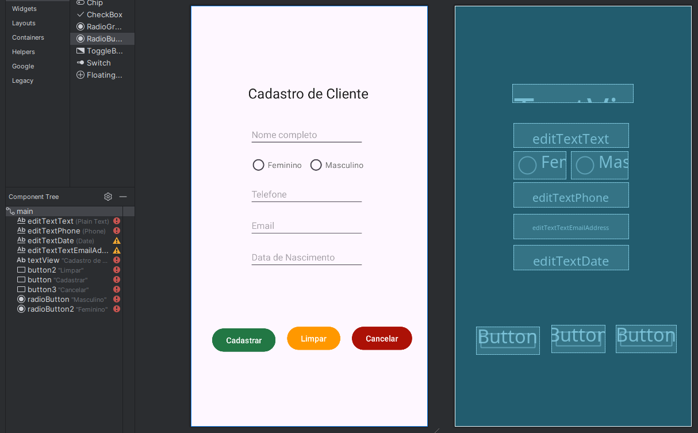

Disciplinas
-
DESENVOLVIMENTO PARA DISPOSITIVOS MÓVEIS Concluído
Materiais
Neste módulo, você aprendeu sobre os principais componentes de interface gráfica e gerenciadores de layout para desenvolvimento Android.
A interface gráfica do usuário (GUI) é um elemento crucial em aplicativos, pois serve como o ponto de interação entre o usuário e o software. Uma GUI bem projetada melhora a usabilidade, a acessibilidade e permite que os usuários naveguem e operem o aplicativo de forma intuitiva.
Utilizando os conhecimentos abordados, elabore no Android Studio uma tela de cadastro de cliente com componentes que permitam a entrada dos seguintes dados: Nome completo, Sexo, Telefone, E-mail, Data de nascimento. A tela também deve possuir três botões com os textos: “Cadastrar”, “Limpar” e “Cancelar”. Modifique as cores e os tamanhos dos textos e dos componentes da forma que achar mais conveniente para a usabilidade.
Conteúdo
Comente e discuta com os colegas no fórum sobre o processo de criação da tela, quais os tipos de componentes que você utilizou e qual foi o gerenciador de layout escolhido para organizá-los. Compartilhe uma captura de tela (print screen) da interface elaborada.
Resolução.
📱 Desenvolvimento da Tela de Cadastro de Cliente- Componentes utilizados:
- textView
- editTextText
- editTextPhone
- editTextDate
- editTextTextEmailAddress
- button
- radioButton
- Gerenciador de Layout:
- ConstraintLayout, estilizado com cores, tamanhos e margens.
- Interface elaborada:
